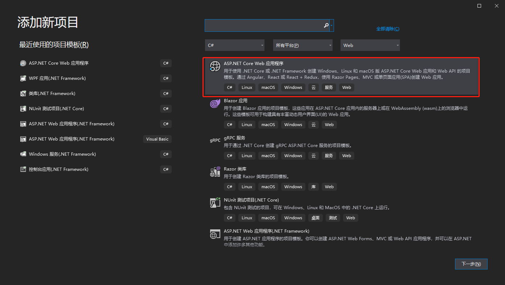
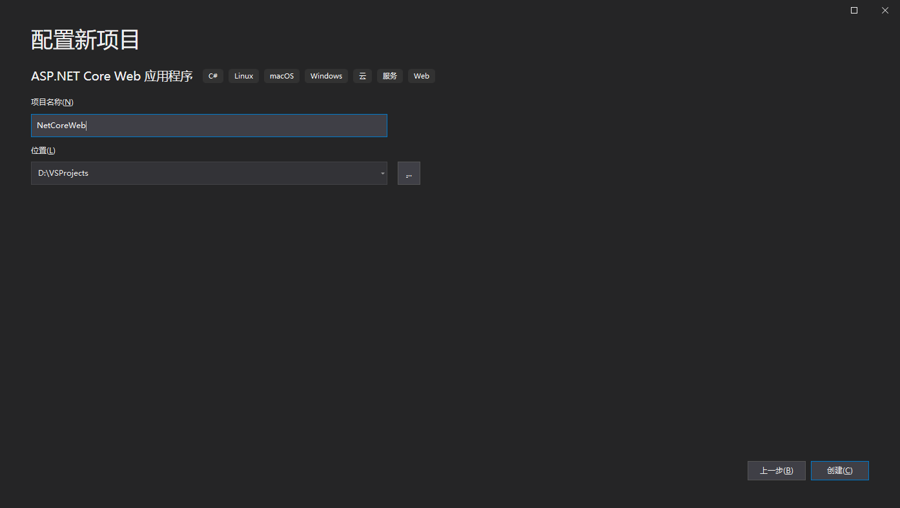
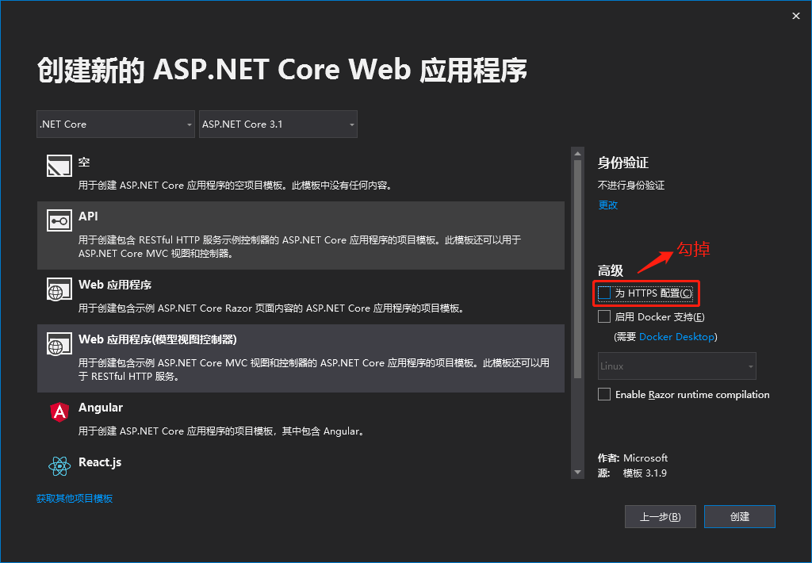
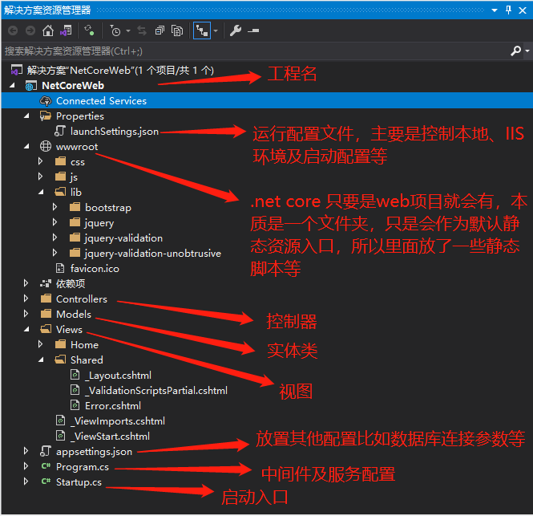
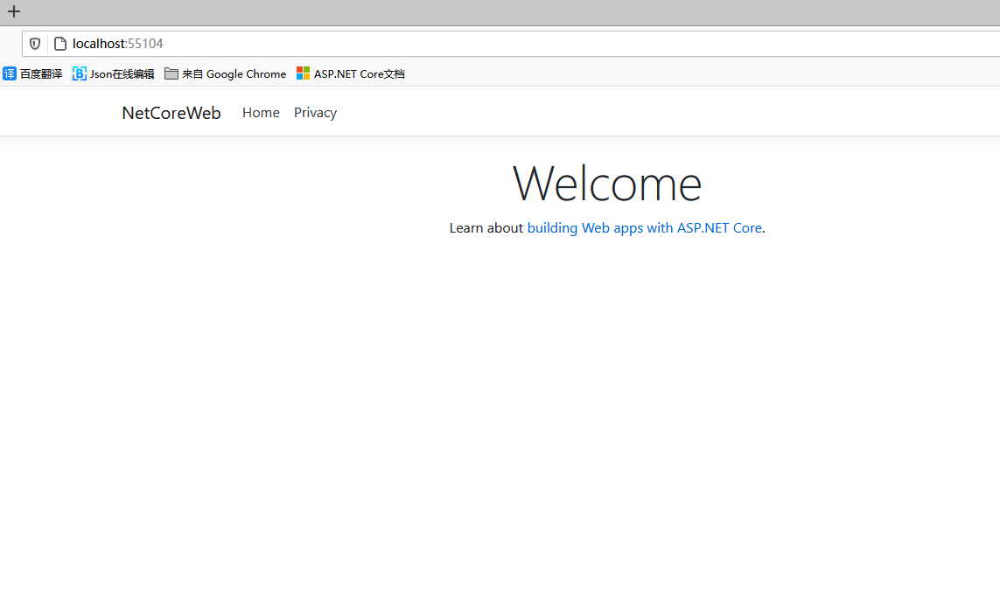
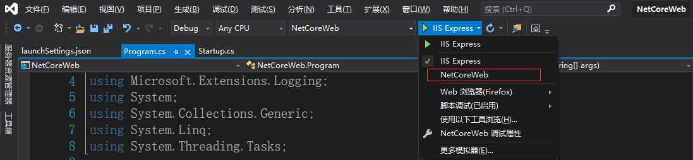

# 初识.NetCore Web (一)
# .Net Core 起源背景
许久不写博客了，今天聊一聊.net core， 在这个开源的时代,Java等开源一度让其成为最流行的开发语言,每年保持着使用率排名榜首,而作为老牌子的.net 国内发展趋势并不是很好,究其原因就是开源共享成为主流,就好比中国加入WTO前后发展速度不言而喻,而最近老美等西方国家按捺不住性子,各种挑起事端,其背后的原因就是中国在崛起,同样21世纪初java流行并不如C#,然而如今已不知甩了c#几条街,Java作为开源免费提供给开发人员,一时间大量开发人员拥抱Java,众人拾柴火焰高,微软再也坐不住了,以前仗着window系统是自家的,在自己系统上玩编程,独霸一方。而如今其他系统如linux,unix,mac os应用越来越广,浏览器的崛起造就了CS时代,B/S凸显的那么蹩脚不方便微软不得不妥协,跨平台、开源是重中之重,.net core 应运而生。
以下是.net core各个版本发布时间
| 版本 | 发布时间 |
|---|---|
| 1.0 RC1 | 2016年2月15日 |
| 1.0 RC2 | 2016年5月16日 |
| 1.0 | 2016年6月27日 |
| 1.1 | 2016年11月16日 |
| 2.0 | 2017年8月14日 |
| 2.1 | 2017第四季度 |
| 2.2 | 2018年8月22日 |
| 3.0 | 2019年1月29日 |
| 3.1 | 2019年10月15日 |
| 5.0 | 2020年11月10日 |
| v6.0.0-preview.1 | 2021年2月17日 |
微软发布的5.0之后的版本是为了统一.net 所有平台，现在最新的是v6.0版本,最新的版本支持的语法更高,性能也最好，不过目前我接触的是3.0
更详细的版本请查看官网.net Core版本
其他不多讲，从最基础的做起，创建一个.net core的应用程序 下面创建一个基于3.1的 asp.net core web工程 使用ide 是VS 2019
# 1、新建一个项目

# 2、输入工程名称和工程所在的存储路径,点击“创建”

# 3、根据实际需要创建对应的项目
- 空项目:是最基础运行的,运行之后可在浏览器中看到输出"Hello World!"
- API: 适合开发RESTful 服务，开发接口 (RESTful是一种接口规范标准,不过多叙述)
- Web应用程序:集成了Razor组件，可以看到基础页面 (关于Razor 它是新一代的模板引擎用来取代MVC 可以发现没有了MVC的Controller,而且.cshtml下有个.cs 第一反应是WinForm再生？？当然不会是这些，算是view和controller结合体，暂时与本篇无关)
- Web应用程序:在Web基础上支持MVC架构层模型，视图控制器，同时集成了bootstrap前端框架（这里以这个为准说明，其他的可自测查看创建项目的区别）

# 4、工程目录

# 5、Program.cs 文件
public class Program {
public static void Main(string[] args) {
CreateHostBuilder(args).Build().Run(); //主程序入口
}
public static IHostBuilder CreateHostBuilder(string[] args) =>
Host.CreateDefaultBuilder(args)
.ConfigureWebHostDefaults(webBuilder => {
webBuilder.UseStartup<Startup>(); //调用Startup完成注册等服务
webBuilder.UseUrls("http://*:5003");//此处可配置端口
});
}
2
3
4
5
6
7
8
9
10
11
12
很熟悉，Main函数主程序入口
# 6、Startup.cs文件
public class Startup {
public Startup(IConfiguration configuration) {//这个地方configuration用到了依赖注入,关于注入请自行查阅相关资料，java也有
Configuration = configuration;
}
public IConfiguration Configuration { get; }
// This method gets called by the runtime. Use this method to add services to the container.
public void ConfigureServices(IServiceCollection services) { //服务注册
services.AddControllersWithViews();//MVC 使用的controller和view
}
// This method gets called by the runtime. Use this method to configure the HTTP request pipeline.
public void Configure(IApplicationBuilder app, IWebHostEnvironment env) { //开启的配置
if (env.IsDevelopment()) { //如果是开发环境,此处配置受launchSettings.json配置影响
app.UseDeveloperExceptionPage();
} else {
app.UseExceptionHandler("/Home/Error");
}
app.UseStaticFiles(); //开启静态文件可访问,比如对外开放下载图片等
app.UseRouting(); //使用路由
app.UseAuthorization(); //开启认证
app.UseEndpoints(endpoints => { //配置路由 默认访问HomeController 下的Index方法{id?}这个是可传可不传意思
endpoints.MapControllerRoute(
name: "default",
pattern: "{controller=Home}/{action=Index}/{id?}");
});
}
}
2
3
4
5
6
7
8
9
10
11
12
13
14
15
16
17
18
19
20
21
22
23
24
25
26
27
28
29
30
31
32
# 7、运行程序

此处使用端口在launchSettings.json中可配置或者Program.cs中的端口，优先使用代码配置端口，然后是配置文件,注意，如果端口没有生效，而是配置文件中的iis的端口，请确定不要使用iis Express,这样的话会以iis方式启动

好了以上就是.net core web 简单创建与运行